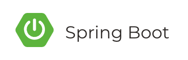

2018년 10월 30일자로 스프링 부트 2.1이 공개되었습니다. 어떤 점이 달라졌는지 살펴보겠습니다.

써드파티 라이브러리 업그레이드
스프링부트에서 사용하는 써드파티(third-party) 라이브러리들의 버전이 업그레이드 되었습니다. 안정된(stable) 버전 중에서는 최신 버전이죠.
- Hibernate 5.3 : ORM
- Micrometer 1.1 : 애플리케이션 모니터링
- Reactor (Californium) : JVM 기반 non-blocking 애플리케이션을 만들기 위한 4세대 리액티브 라이브러리
- Spring Data (Lovelace)
- Spring Framework 5.1
- Tomcat 9
- Undertow 2 : Non-blocking IO 기반 자바 웹 서버
성능 향상
더 빠르고 더 적은 메모리를 사용하게 되었습니다.
자바 11 지원
스프링 프레임워크 5.1이 자바 11을 지원하면서 스프링 부트 2.1도 자바 11을 지원하게 되었습니다.
DataSize
10MB, 512Byte 같은 데이터 크기를 쉽게 다룰 수 있는 DataSize 클래스를 지원합니다.
1 |
|
Actuator 엔드포인트
Spring Boot Actuator 는 애플리케이션 모니터링에 필요한 정보를 제공합니다. 스프링 부트 2.1에서는 두 개의 새로운 정보가 추가되었습니다.
/actuator/caches: 애플리케이션 캐시 관련 정보./actuator/integrationgraph: Spring Integration 컴포넌트를 그래프로 보여줌.
각종 정보
스프링 부트 Actuator 는 Micrometer 를 자동설정 해주고 다양한 모니터링 시스템을 지원합니다. Micrometer 가 1.1로 업그레이드 된 것 뿐만 아니라 AppOptics, Humio, KariosDB 의 자동설정도 추가되었습니다. 그리도 다음과 같은 정보들도 추가로 관리할 수 있습니다.
- Hibernate 정보
- 스프링 프레임워크의
WebClient - Kafka 컨슈머 정보
- Log4j2 정보
- Jetty 서버 쓰레드 풀 정보
- 서버 사이드 Jersey HTTP 요청 정보
이 외에도 많은 변화가 있었습니다. 여기엔 500여명의 개발자와 1만9천건 이상의 커밋이 있었습니다.[1]
참고
Related Posts
- 1.https://github.com/spring-projects/spring-boot/commits/master ↩